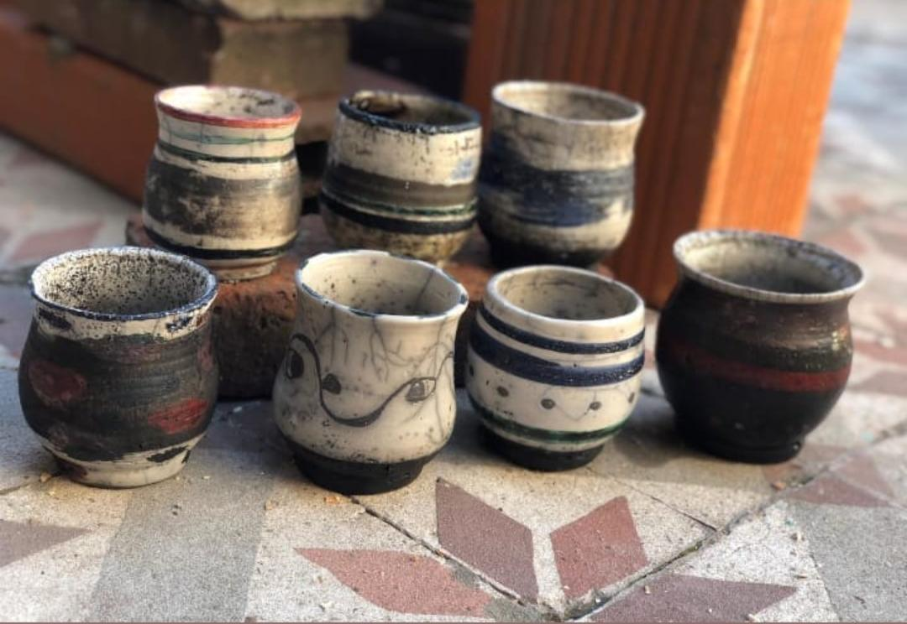
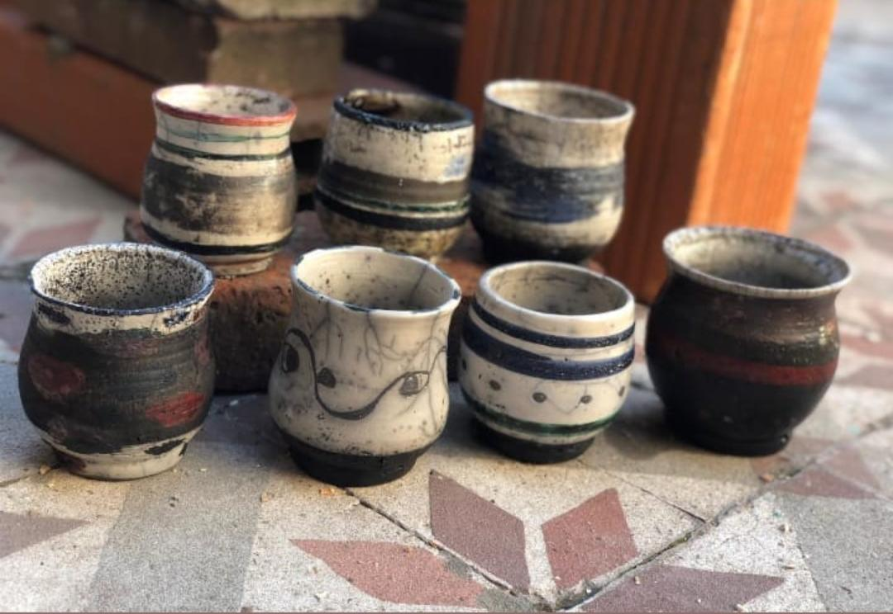

TECNICAS
Existen dentro del mundo de la arcilla y la cerámica diferentes técnicas y procedimientos que se pueden aplicar para lograr diferentes efectos y diferentes texturas... Existen muchisimas!! A continuación te muestro algunas de ellas.. las que mas estoy utilizando en estos últimos tiempos...
 
